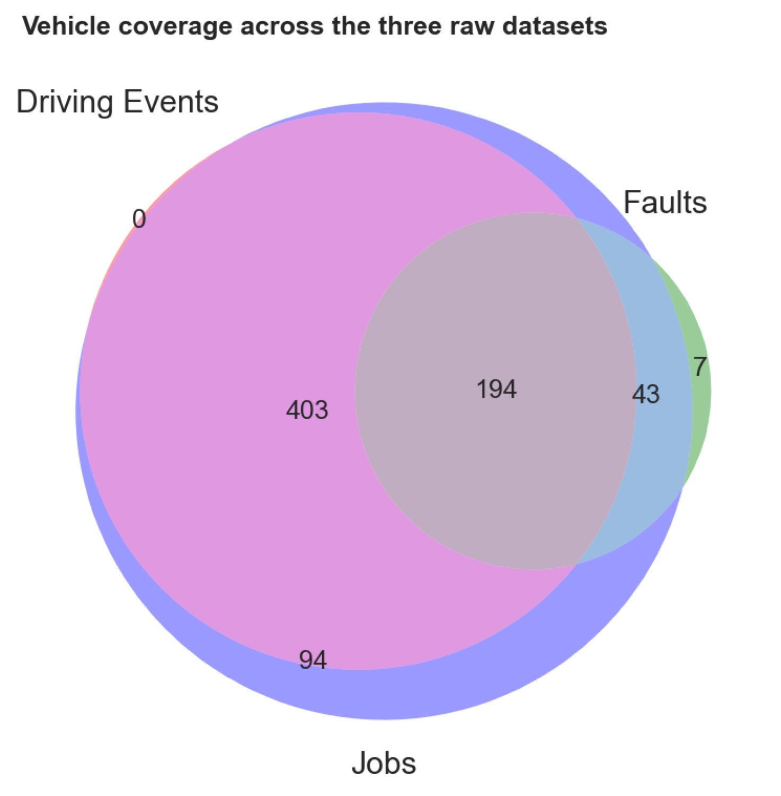
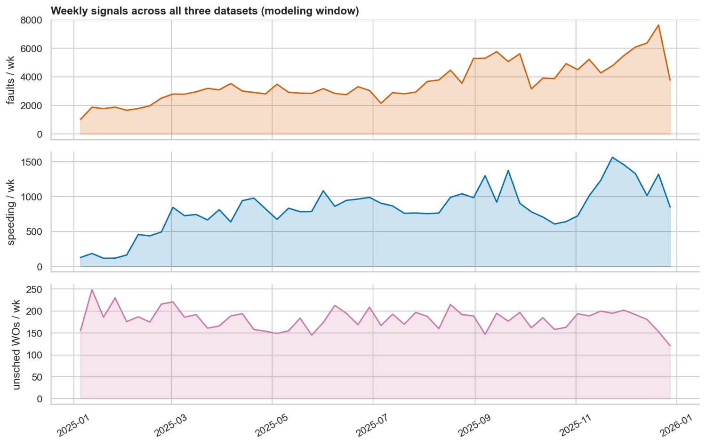
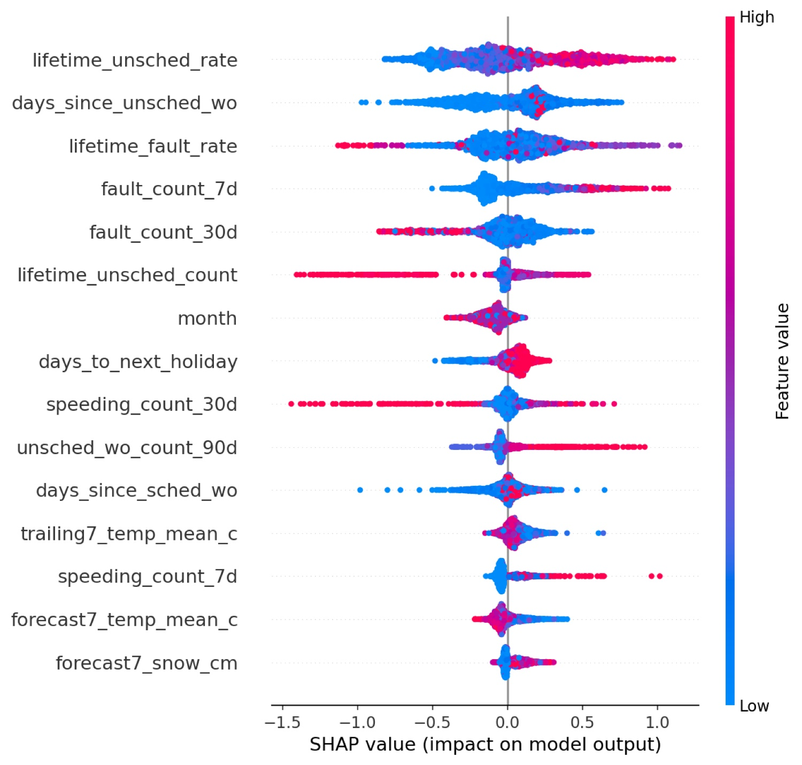

Three datasets, one fleet
The City provided three exports describing the same heavy-duty fleet, each capturing a different part of vehicle operations.
The first finding was in the joins. Two files store vehicle IDs as integers while Fault Alerts stores them as zero-padded text, so roughly 5% of vehicles silently dropped out of every join until all IDs were normalised to six-character strings. After alignment, only 194 vehicles appear across all three feeds. That common subset is the cohort a model can learn from.

Because the provided feeds do not capture road conditions, I added daily Toronto weather from the Open-Meteo Historical Weather API along with an Ontario statutory holiday calendar. Historical weather serves as a proxy for the 7-day forecast a live production system would consume.
Defining an unscheduled repair
Before modelling breakdown risk, the work-order records needed a clear target definition.
Each job line carries one of 21 reason codes, which map into three classes. Driver reports, defects discovered during other work, service calls, no-starts, accidents, comebacks, vandalism and warranty work are labelled unscheduled. Preventive maintenance, capital improvements, delivery and disposal prep, seasonal conversions and recalls are labelled scheduled. Modifications, vendor checks and parts supply fall outside the distinction and are excluded. A work order is marked unscheduled if any of its lines is unscheduled, since the operational question is whether a vehicle enters the shop unexpectedly.

Mid-year data shifts
Before mid-June 2025, almost every engine fault alert is logged as "Unrated". After that point, a four-level severity scale begins populating.

Overall telematics volume also climbed steadily across the year: fault alerts grew from roughly 1,500 to 6,000 per week, and speeding events from about 150 to 1,500 per week. Unscheduled work orders stayed flat at around 200 per week. Vehicles were not failing four times more often; telematics coverage was expanding. To avoid confounding by fleet size, every model feature is computed at the per-vehicle level rather than as a fleet-wide total.

A single vehicle's timeline
Plotting all three feeds for one unit shows the event stream the model sees day by day.

Modelling and walk-forward validation
Each observation represents one vehicle on one calendar day, with a binary label indicating whether an unscheduled work order opens within the next seven days.
Features cover rolling fault counts over 1, 7 and 30 days (including separate windows for critical and high-severity alerts), days since the last critical fault, trailing speeding counts, duration and distance, recent scheduled and unscheduled work orders, each vehicle's cumulative breakdown and fault rates, calendar and holiday indicators, and trailing plus forward-looking weather (temperature, precipitation, snowfall and freeze-thaw days).
I trained scikit-learn's HistGradientBoostingClassifier and benchmarked it against a per-vehicle frequency baseline that predicts each unit's historical 7-day repair rate (falling back to the fleet average for unseen vehicles). Both are evaluated using five walk-forward folds cut on calendar-day boundaries, so no day is shared between training and testing.
Evaluation: baseline vs. gradient boosting
Across five walk-forward folds, the gradient-boosted model did not decisively outperform the simple per-vehicle baseline.
Mean ± standard deviation across the five walk-forward folds. Higher is better for ROC-AUC and PR-AUC; lower is better for the Brier score. Both models clear the 10.2% fleet base rate.
The GBM gains slightly on PR-AUC but trails on ROC-AUC and Brier score. The SHAP summary explains why: the top three features are lifetime unscheduled repair rate, days since the last unscheduled work order, and lifetime fault rate. All three encode a vehicle's prior maintenance history. Recent telematics alerts and weather contribute, but an order of magnitude less. On this cohort, a vehicle's repair history is far more informative than short-term fault spikes.

Recommendations
Expand telematics coverage
Only 194 of the City's 5,000+ heavy-duty units appear in all three feeds. Onboarding more vehicles into the fault and driving-event streams would lift predictive power more than further feature engineering on the current cohort.
Test a longer forecast horizon
Component wear and freeze-thaw stress typically take longer than seven days to cause a shop visit. Re-evaluating the same feature set at 30-day or 60-day horizons would likely capture more signal from telematics and weather.
Join core asset attributes
Vehicle age, odometer reading, model year and replacement cost already sit in the fleet management system and should separate chronic problem units much better than event counts alone.
Deploy as a ranked inspection list
Convert predicted probabilities into a weekly top-N inspection queue sized to shop capacity, paired with per-vehicle SHAP explanations so supervisors can see why each unit was flagged.
Reproducibility
Full pipeline and technical write-up
With the City's input files placed in data/raw/, the full pipeline runs with a single command (python main.py). Raw municipal data is not redistributed.
Take-home assessment prepared for a Data Specialist role with City of Toronto Fleet Services. Historical weather: Open-Meteo API. This page is an independent portfolio project and is not an official publication of the City of Toronto.